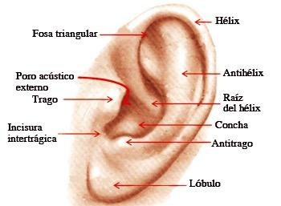
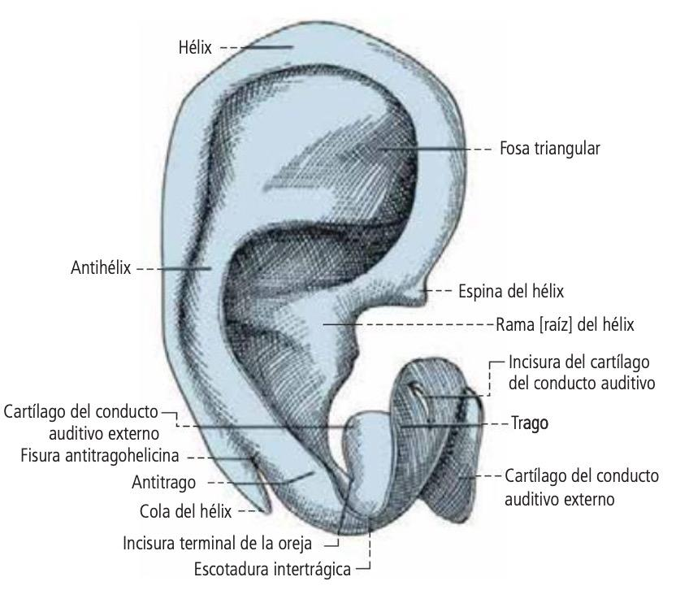
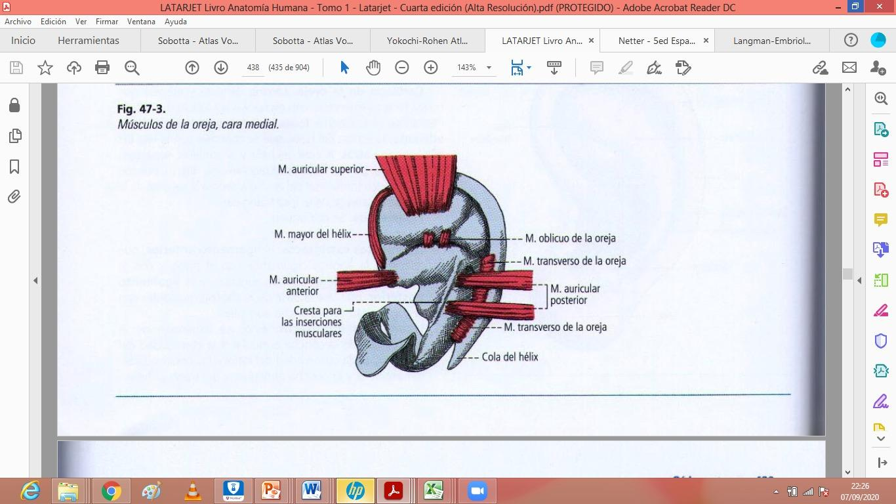
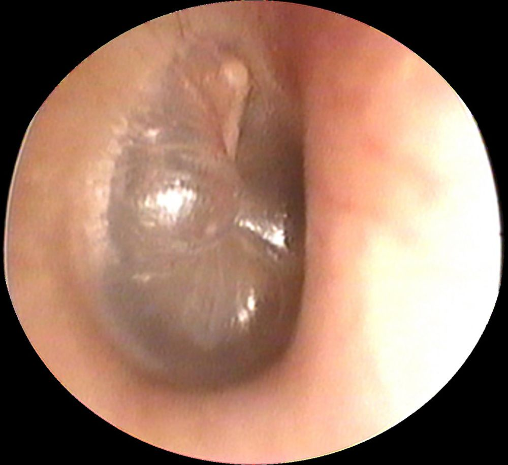
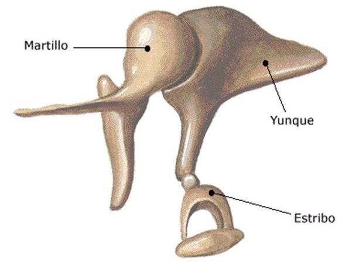
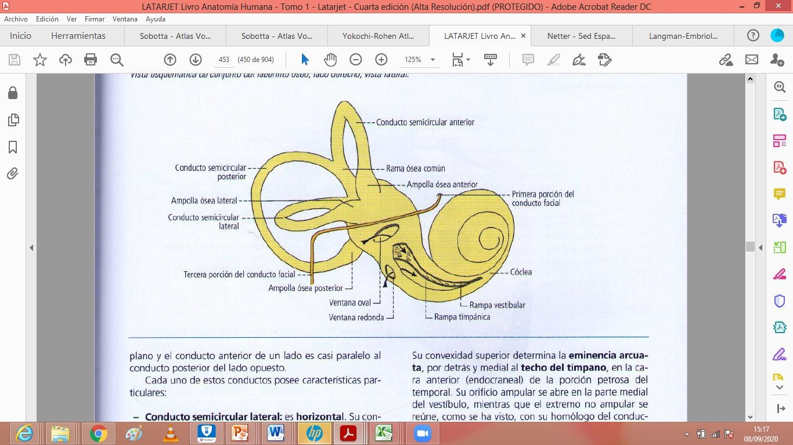
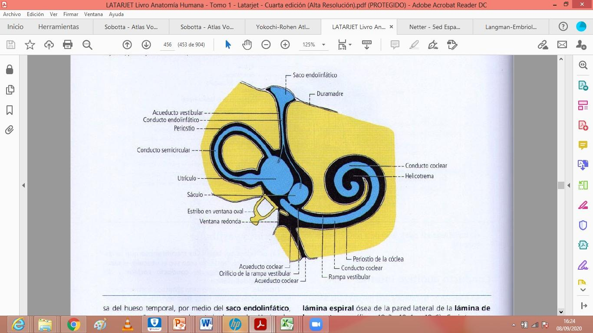
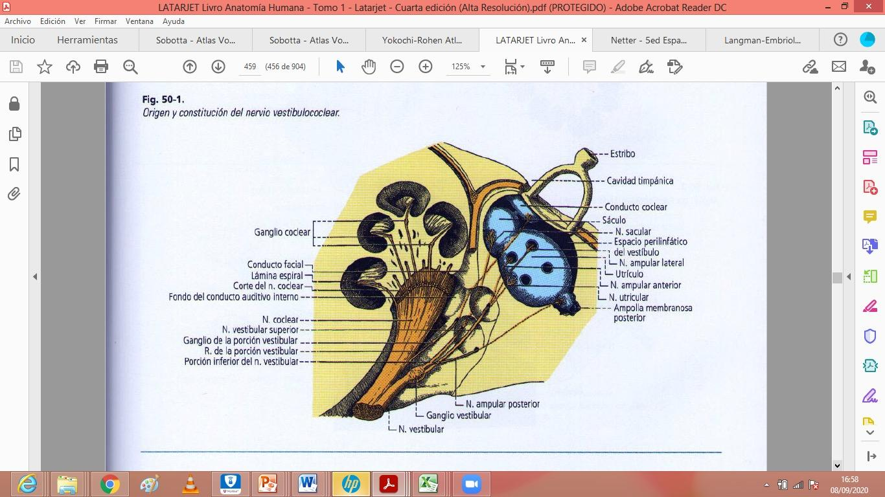

ClinicusMed · Dossiê Clinicus — Padrão de Excelência
Nv. 1
0 XP
🎯 O que você vai conseguir fazer depois desse capítulo
Descrever as 2 funções do ouvido
Listar os componentes das 3 partes do ouvido (externo/médio/interno)
Descrever o Pavilhão Auricular e o Conduto Auditivo Externo
Descrever a Cavidade Timpânica e a Membrana do Tímpano
Listar os 3 ossículos do ouvido em ordem
Descrever a Trompa Auditiva (Eustáquio)
Diferenciar labirinto ósseo de labirinto membranoso
Descrever o Nervo Vestibulococlear e as vias vestibulares/cocleares
👂 Funções do Ouvido
🟢 Dupla função: o ouvido é um sistema de órgãos que realiza 2 funções: 1) Perceber a posição do indivíduo no espaço (equilíbrio); 2) Perceber a vibração das ondas sonoras (audição).
📊 As 3 Partes do Ouvido
Parte
Componentes
A. Ouvido Externo
1. Pavilhão auditivo. 2. Conduto Auditivo Externo
B. Ouvido Médio
1. Membrana do tímpano. 2. Cadeia de ossículos. 3. Caixa do tímpano. 4. Janela redonda. 5. Janela oval. 6. Trompa de Eustáquio
C. Ouvido Interno
1. Labirinto ósseo. 2. Labirinto membranoso
👂 Ouvido Externo — Pavilhão Auricular

Pavilhão Auricular (Orelha)
🟢 Pavilhão Auricular (Orelha): tem face lateral e face medial.

Cartilagens do Pavilhão Auricular

Músculos do Pavilhão Auricular
O pavilhão auricular tem sustentação cartilaginosa, é irrigado por artérias específicas da região, e possui músculos próprios (auriculares — vistos no Cap. 3).
👂 Ouvido Externo — Conduto Auditivo Externo (CAE)
🟢 CAE: canal que conduz o som do pavilhão auricular até a membrana do tímpano.
🦴 Ouvido Médio — Visão Geral
🟢 Ouvido Médio: cavidade cheia de ar, escavada no osso temporal, situada entre o ouvido externo e o interno. Contém a cadeia de ossículos.
Consta de uma parte central — a cavidade timpânica — comunicada com a faringe pela frente através da trompa auditiva.
Parede da Cavidade Timpânica
Característica
Lateral
Membranosa
Medial
Labiríntica
Superior
Tegmentária
Inferior
Jugular
Posterior
Mastóidea
Anterior
Carotídea
🧠 Mnemônico: As paredes têm nomes que indicam o que está do outro lado — Jugular (veia jugular embaixo), Carotídea (carótida na frente), Mastóidea (mastoide atrás).
🥁 Membrana do Tímpano

Membrana do Tímpano
🟢 Membrana Timpânica: membrana circular, delgada, transparente, de 1cm de diâmetro. Pela sua face lateral, fecha o CAE.
🦴 Ossículos do Ouvido

Cadeia de Ossículos
🟢 Ordem (de lateral pra medial): constituem uma cadeia articulada, desde a membrana timpânica até a janela oval.
🧠 Mnemônico: "MBE" — Martelo, Bigorna, Estribo — sempre nessa ordem, de fora (tímpano) pra dentro (janela oval).
📌 O Martelo se fixa na membrana timpânica; o Estribo se fixa na janela oval — os 2 pontos de conexão do sistema de ossículos.
💪 Músculos do Ouvido Médio
Músculo
Ossículo associado
Tensor do Tímpano
Martelo
Estapédio
Estribo
🟢 Ação: a ação desses músculos se exerce sobre os ossículos, de modo que o movimento se transmite aos outros. São ANTAGONISTAS entre si.
🔴 Correlação Clínica: esses músculos participam do reflexo estapediano/acústico, que protege a orelha interna de sons excessivamente altos, contraindo-se pra limitar a amplitude de vibração dos ossículos.
🎺 Trompa Auditiva (de Eustáquio)
🟢 Trompa Auditiva: longo conduto que se estende da parte anterior da cavidade timpânica até a nasofaringe. Oblíqua de trás pra frente, de lateral pra medial, e um pouco de cima pra baixo.
Aspecto
Detalhe
Comprimento
35-45mm no adulto
Porção Posterolateral
Óssea, escavada na parte inferior do osso temporal
Porção Anteromedial
Fibrocartilaginosa
🔴 Correlação Clínica: a Trompa Auditiva equaliza a pressão entre o ouvido médio e a nasofaringe — sua disfunção (comum em resfriados, alergias) causa sensação de "ouvido tampado" e predispõe a otites médias.
🌀 Ouvido Interno — Visão Geral
🟢 Ouvido Interno: formado por um conjunto de cavidades ósseas escavadas na porção petrosa do temporal (labirinto ósseo). Os sacos membranosos contêm um líquido (a endolinfa), e estão separados das paredes ósseas por outro líquido (a perilinfa).
🧠 Mnemônico: Endolinfa = DENTRO dos sacos membranosos. Perilinfa = ao REDOR (entre membranoso e ósseo).
🌀 Labirinto Ósseo x Labirinto Membranoso

Labirinto Ósseo

Labirinto Membranoso
Labirinto
Característica
Ósseo
Cavidades ósseas na porção petrosa do temporal
Membranoso
Compreende as partes moles contidas nas cavidades do labirinto ósseo — divide-se em Labirinto Vestibular e Labirinto Coclear
👂 Nervo Vestibulococlear (VIII Par Craniano)

Nervo Vestibulococlear
🟢 Constituído pela união de: Nervo Vestibular (equilíbrio) + Nervo Coclear (audição).
🎵 Vias Cocleares
🟢 Vias Cocleares: formadas por diversas estruturas responsáveis por conduzir os sons do meio externo até as áreas corticais da audição.
🔴 Órgão Espiral (de Corti): o órgão receptor, constituído pelas células de Corti, encarregadas de perceber as vibrações geradas pelas diferenças de pressão entre as rampas vestibular e timpânica.
⚖️ Vias Vestibulares
🟢 Vias Vestibulares: conectam o aparato vestibular com o cerebelo — são as vias responsáveis pelo sentido do equilíbrio ESTÁTICO e CINÉTICO. Originam-se a nível dos receptores labirínticos.
Receptor
Tipo de Equilíbrio
Cristas Ampulares (dos condutos semicirculares)
Equilíbrio CINÉTICO (dinâmico)
Máculas (do utrículo e do sáculo)
Equilíbrio ESTÁTICO
🧠 Mnemônico: Cristas AMPULARES = movimento (cinético, tipo giros). Máculas (utrículo/sáculo) = posição estática (parado, gravidade).
Trocar a ordem dos ossículos (sempre Martelo→Bigorna→Estribo, de fora pra dentro). Confundir endolinfa (dentro do labirinto membranoso) com perilinfa (entre membranoso e ósseo). Trocar cristas ampulares (equilíbrio cinético/movimento) com máculas (equilíbrio estático/posição).
⚡ Questão rápida
Por que faz sentido que existam 2 músculos diferentes no ouvido médio (Tensor do Tímpano e Estapédio), agindo como ANTAGONISTAS um do outro?
Essa configuração antagonista faz sentido quando você considera a função protetora conjunta desses 2 músculos em relação ao sistema de transmissão sonora do ouvido médio. O Tensor do Tímpano (que se insere no Martelo) e o Estapédio (que se insere no Estribo) atuam nos 2 EXTREMOS opostos da cadeia de ossículos — o Martelo está mais próximo da membrana timpânica (entrada do sistema), enquanto o Estribo está mais próximo da janela oval (saída do sistema, em direção ao ouvido interno). Quando esses músculos se contraem (principalmente em resposta a sons muito altos, um mecanismo chamado reflexo estapediano/acústico), eles alteram a TENSÃO e a RIGIDEZ do sistema de ossículos como um todo — reduzindo a amplitude de vibração transmitida através da cadeia, e assim PROTEGENDO as estruturas delicadas do ouvido interno (especialmente as células ciliadas do órgão de Corti, que podem ser danificadas permanentemente por exposição a sons intensos) de um excesso de estimulação mecânica. A natureza antagonista entre os 2 músculos (agindo em pontos opostos da cadeia, com efeitos coordenados mas não idênticos sobre a rigidez do sistema) permite um controle mais fino e ajustável da transmissão sonora do que se houvesse apenas um único músculo atuando isoladamente — similar ao princípio de pares musculares antagonistas encontrado em várias outras articulações do corpo, onde o equilíbrio dinâmico entre 2 forças opostas permite controle mais preciso do que uma força única atuando sozinha.
🧠 Autoexplicação
Por que faz sentido que existam 2 tipos diferentes de receptores vestibulares (cristas ampulares para equilíbrio cinético, e máculas para equilíbrio estático), ao invés de um único tipo de receptor cobrindo ambas as funções?
Essa especialização em 2 tipos distintos de receptores reflete a diferença fundamental entre os 2 TIPOS DE INFORMAÇÃO que o sistema vestibular precisa captar pra manter o equilíbrio corporal completo. O equilíbrio CINÉTICO (dinâmico) precisa detectar especificamente ACELERAÇÕES ANGULARES da cabeça — ou seja, mudanças na velocidade de ROTAÇÃO da cabeça em qualquer dos 3 planos espaciais (por exemplo, quando você gira a cabeça rapidamente, ou quando faz um movimento giratório do corpo todo). As cristas ampulares, localizadas nos condutos semicirculares (que estão orientados em 3 planos perpendiculares entre si, correspondendo aos 3 eixos possíveis de rotação), são especificamente sensíveis ao movimento da endolinfa DENTRO desses condutos durante movimentos rotacionais — a inércia do líquido endolinfático, em relação ao movimento do próprio conduto ósseo/membranoso durante a rotação da cabeça, deflete as células ciliadas da crista ampular, gerando o sinal neural correspondente a essa aceleração angular específica. Já o equilíbrio ESTÁTICO precisa detectar a POSIÇÃO da cabeça em relação à gravidade (se está inclinada, e em que direção) e ACELERAÇÕES LINEARES (movimento em linha reta, como andar de carro que acelera/freia). As máculas do utrículo e do sáculo contêm células ciliadas cobertas por uma membrana otolítica (com pequenos cristais de carbonato de cálcio, os otólitos, que têm densidade maior que o líquido endolinfático ao redor) — a força da gravidade (ou de aceleração linear) sobre esses otólitos mais densos faz com que a membrana otolítica se desloque em relação às células ciliadas subjacentes, gerando o sinal correspondente à posição estática da cabeça ou à aceleração linear. Como esses 2 tipos de movimento (rotacional vs linear/gravitacional) exigem mecanismos físicos de detecção fundamentalmente DIFERENTES (inércia de fluido em conduto circular vs. deslocamento de massa densa sobre superfície sensorial), fazia sentido evolutivamente que sistemas sensoriais especializados e estruturalmente distintos se desenvolvessem pra cada tipo específico de informação, ao invés de tentar criar um único receptor genérico que tentasse captar ambos os tipos de movimento de forma menos eficiente.
⚠️ Onde todo mundo escorrega
Trocar a ordem dos ossículos — sempre Martelo→Bigorna→Estribo (M-B-E), de lateral pra medial
Confundir endolinfa (dentro do labirinto membranoso) com perilinfa (entre membranoso e ósseo)
Trocar cristas ampulares (equilíbrio cinético) com máculas (equilíbrio estático)
Esquecer que o Nervo Vestibulococlear é a UNIÃO de 2 nervos (vestibular + coclear), não um nervo único simples
Confundir as paredes da cavidade timpânica (lateral/medial/superior/inferior/posterior/anterior) e suas denominações específicas
🩺 Caso Clínico Progressivo — Otite Média Aguda em Criança
Vamos acompanhar uma criança com dor de ouvido e febre, relacionando o caso à anatomia da Trompa Auditiva. O caso evolui em 3 níveis — clica em cada um pra ver como as coisas vão se desenrolando.
🩺 Recomendado pela ClinicusMed
🎥 Complemento em Vídeo
A Clinicus selecionou este conteúdo para complementar seu estudo. Não substitui a leitura do resumo — o resumo ensina, o vídeo reforça.
Carregando recomendações...
🃏 Flashcards — SM-2 real + interface Anki
O sistema guarda, no seu navegador, quais cards você já sabe bem e quais precisam voltar mais cedo — cada vez que você avalia um card, ele recalcula quando ele deve voltar.
Cartão 1 / 0Dominados: 0
PERGUNTA
RESPOSTA
✅ Banco de Questões Comentadas
10 questões, do mais básico ao mais puxado. Escolhe uma alternativa, depois clica em "Ver comentário completo" — vale a pena ler até quando você acerta, porque o comentário explica cada alternativa, não só a certa.
🎮 Quiz Rápido
🖼️ Atlas de Imagens — Ouvido
Todas as imagens desse capítulo, reunidas num só lugar pra revisão rápida.